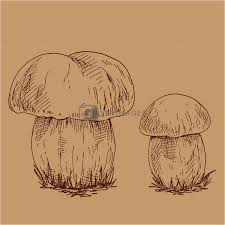

About Us
Welcome to Fungi Foraging Ireland, where we teach you the rewards and risks of wild mushroom picking. This once niche hobby has experienced a surge of new enthusiasts tired of spending the whole day behind the desk and seeking to reconnect with the natural world. The field may seem daunting to beginners as misjudging an edible species for a poisonous variety might be your last mistake, but with this proven safety guide we hope anyone can learn the necessary information to have a hazard free and exciting foraging experience. We provide information on identification, mushroom anatomy, poisonous species to watch out for, delicious recipes to make the most out of your haul and much more...